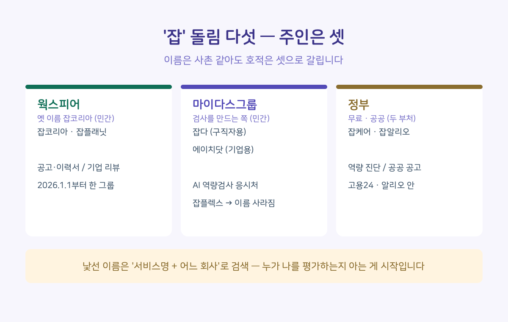
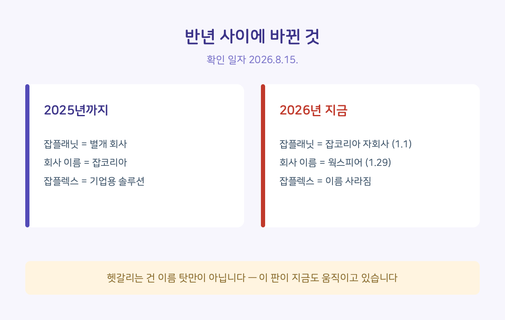

이름이 전부 '잡'으로 시작하는 서비스들이 있습니다. 잡코리아, 잡다, 잡케어, 잡플래닛. 저는 채용 관련 자료를 정리해 오면서도 이것들이 계속 헷갈렸습니다. 나만 그런 게 아니겠다 싶어 정리를 시작했는데, 정리하다가 더 놀랐습니다.
반년 사이에 절반이 바뀌어 있었습니다.
그러니까 우리가 헷갈리는 건 이름이 비슷해서만이 아닙니다. 이 판이 지금도 움직이고 있어서입니다.
■ 지금 기준 지도
잡코리아는 민간 취업포털입니다. 공고 검색하고 이력서 올리는 그곳.
잡다(JOBDA)는 구직자용 매칭 플랫폼이고, 'AI 역량검사'를 응시하게 되는 곳이 보통 여기입니다. 운영은 자인원, 검사를 만든 곳은 마이다스인 — 둘 다 마이다스그룹이 세운 회사입니다.
잡케어는 고용노동부의 무료 AI 직업역량 진단입니다. 유일한 정부 서비스고, 고용24 로그인 후 잡케어 메뉴에 있습니다.
잡플래닛은 기업 리뷰·평판 사이트입니다. 원래 별개 회사 서비스였는데, 지금은 아닙니다.
여기에 잡알리오(재정경제부의 공공기관 채용정보)까지 붙으면 다섯입니다.

■ 반년 사이에 바뀐 것
하나. 잡플래닛이 잡코리아 식구가 됐습니다. 브레인커머스가 운영하던 것을 잡코리아가 영업양수로 인수해, 2026년 1월 1일부터 자회사로 편입됐습니다. 채용 공고를 가진 쪽과 기업 리뷰를 가진 쪽이 한 지붕에 들어간 겁니다.
둘. 잡코리아의 회사 이름이 '웍스피어'로 바뀌었습니다. 2026년 1월 29일, 창립 30주년에 맞춰 발표했습니다. 서비스 이름 '잡코리아'는 그대로 씁니다. 앱은 여전히 잡코리아인데 만드는 회사는 웍스피어인 셈입니다. 알바몬·잡플래닛·나인하이어도 이 회사 아래 묶였습니다.
셋. 잡플렉스는 이름이 없어졌습니다. 2020년에 나온 기업용 채용 플랫폼인데, 확인해 보니 공식 사이트가 열리지 않습니다. 주소는 아직 등록돼 있는데 사이트만 내려가 있습니다. 하는 일이 없어진 건 아닙니다. 기업용 채용 기능은 잡다 안으로 들어갔고, 채용과 평가를 묶은 '에이치닷'도 따로 있습니다.
그런데 여기서 끝내 못 찾은 게 있습니다. 잡플렉스를 언제 어떻게 정리했는지 회사가 밖에 알린 기록입니다.
계약한 기업들에는 따로 알렸을 수 있습니다. 공개 공지 의무가 있는지도 저는 확인하지 못했습니다. 그러니 잘못했다고 말하지는 않겠습니다.
다만 하나는 분명합니다. 알림이 갔다면 그건 기업에 갔을 겁니다. 그 시스템을 거쳐 평가받은 사람은 계약 당사자가 아니니까요. 응시 화면에 떴던 이름을 나중에 다시 찾아보면 남아 있는 건 열리지 않는 주소와 예전 기사, 그리고 짐작뿐입니다. 나를 평가한 도구가 어떻게 됐는지를 내가 제일 늦게, 그것도 짐작으로 아는 구조입니다.

"회사 이름이 바뀐 게 나랑 무슨 상관인가" 싶으실 겁니다. 상관있는 건 하나입니다. 운영 주체가 바뀌면 내 정보를 관리하는 주체도 바뀝니다. 이건 알아서 되는 일이 아니라 알려주게 돼 있습니다. 영업을 넘기며 개인정보를 함께 넘길 때는 넘기는 쪽이 미리 알려야 하고, 알릴 내용에는 이전을 원하지 않을 경우 어떻게 하면 되는지까지 포함됩니다.
받은 기억이 없다면 안 읽고 넘겼거나 홈페이지 공지로 갔을 겁니다. 어느 쪽이든 지금 찾아볼 수 있습니다. 반대로 이름이 바뀌었다고 뭘 다시 해야 하는 건 아닙니다. 계정도 이력서도 그대로입니다.
■ 오늘 할 수 있는 것
셋 다 누구의 답변도 기다릴 필요 없이 혼자 끝나는 일입니다.
1. 낯선 서비스 이름을 보면 그 자리에서 '서비스명 + 어느 회사'로 검색해 보세요. 30초면 됩니다. 처음 보는 이름이 주소창에 있다고 이상한 사이트가 아니라, 그 회사가 쓰는 채용 시스템인 경우가 많습니다.
2. 응시 안내가 오면 화면과 메일을 캡처해 두세요. 안내 문구, 화면에 뜨는 서비스명, 발신 메일 주소면 충분합니다. 서비스는 공지 없이도 사라지지만 내가 찍어둔 화면은 남습니다.
3. 잡케어는 방향이 반대인 서비스입니다. 나머지가 평가받는 자리라면, 이건 지원 전에 내가 먼저 진단해 보는 쪽입니다.
이름 때문에 헷갈렸던 서비스가 더 있으면 댓글로 남겨주세요. 모이면 2탄으로 정리하겠습니다. 잡플렉스처럼 저도 확인 못 한 게 있으니, 아는 분이 계시면 그것도 반갑습니다.
올해 시행된 AI 기본법이 채용을 어떻게 바꾸는지는 9월 2일까지 수요일마다 4부작으로 올리고 있습니다.
근거: 잡플래닛 인수·사명 변경 관련 보도 및 잡코리아 공식 공지, 고용24·잡알리오 안내, 개인정보 보호법 제27조 / 2026.8.22. 확인
※ 정보 제공 목적의 글이며, 특정 서비스의 이용을 권유하지 않습니다.